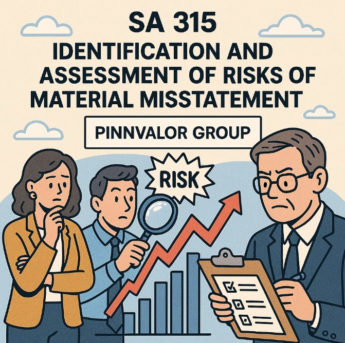

SA 315 – Identification and Assessment of Risks of Material Misstatement: A Comprehensive Overview
In the world of auditing, one of the most critical steps to ensure the accuracy and reliability of financial statements is the identification and assessment of risks that could lead to material misstatements. The auditing standard that guides auditors in this essential task is SA 315, titled “Identifying and Assessing the Risks of Material Misstatement through Understanding the Entity and Its Environment.” This blog will dive deep into what SA 315 entails, why it is important, and how auditors apply its principles to safeguard financial integrity.
Why is understanding an entity’s environment crucial for identifying risks under SA 315?
Effective risk identification isn’t just a step in the audit process — it’s the key to focusing efforts where they matter most, improving audit quality and enhancing stakeholder confidence.
What is SA 315?
SA 315 is one of the key standards issued by the International Auditing and Assurance Standards Board (IAASB) and adopted in various national auditing frameworks. The standard requires auditors to obtain a thorough understanding of the entity they are auditing and its environment, including internal controls, to identify and assess risks of material misstatement in the financial statements.
The focus is on both inherent risks (risks due to the nature of the business or transaction) and control risks (risks that internal controls might fail to prevent or detect material misstatements).
Why is SA 315 Important?
The identification and assessment of risks form the foundation of a high-quality audit. Without properly identifying risks, auditors may fail to design effective audit procedures, potentially overlooking significant misstatements that could mislead stakeholders.
Key reasons SA 315 is vital:
- Ensures Focus: Helps auditors focus their efforts on areas of high risk.
- Increases Audit Efficiency: By targeting high-risk areas, auditors can allocate resources more effectively.
- Improves Audit Quality: Thorough risk assessment leads to better-designed audit responses.
- Enhances Stakeholder Confidence: Reliable audits protect investors, creditors, and the public interest.
Key Components of SA 315
1. Understanding the Entity and Its Environment
Auditors must gather detailed knowledge about the entity, including:
- Industry and Regulatory Environment: Economic conditions, regulatory frameworks, and competition.
- Nature of the Entity: Business operations, ownership structure, financial reporting practices.
- Objectives and Strategies: Business goals and how the entity plans to achieve them.
- Measurement and Review of Financial Performance: Key performance indicators and management’s monitoring processes.
2. Understanding Internal Controls
Internal controls are processes designed to provide reasonable assurance regarding the achievement of objectives in:
- Reliability of financial reporting
- Effectiveness and efficiency of operations
- Compliance with laws and regulations
Auditors assess the design and implementation of relevant controls that address identified risks.
3. Identifying Risks of Material Misstatement
Auditors evaluate how risks might arise from:
- Fraud or error
- Complex transactions
- Accounting estimates
- Changes in the business or environment
4. Assessing the Risks
Risks are assessed at two levels:
- Financial Statement Level: Risks affecting the financial statements as a whole.
- Assertion Level: Risks related to specific classes of transactions, account balances, or disclosures.
The auditor considers the likelihood and magnitude of potential misstatements.
Practical Application of SA 315
Step 1: Risk Identification
Auditors use various techniques such as:
- Inquiry of management and others
- Analytical procedures
- Observation and inspection
Step 2: Risk Assessment
Each identified risk is assessed for its significance and likelihood. For example, the risk of revenue recognition fraud may be considered high in certain industries.
Step 3: Response Design
Based on risk assessment, auditors tailor audit procedures to address the specific risks. High-risk areas receive more extensive testing.
Challenges in Implementing SA 315
- Complexity of the Entity: Large or diversified entities require extensive understanding.
- Changing Environments: Rapid regulatory or technological changes impact risk assessment.
- Fraud Risk: Detecting sophisticated fraud schemes requires professional skepticism.
- Judgment and Experience: Effective risk assessment relies heavily on auditor judgment and expertise.
Conclusion
SA 315 plays a pivotal role in shaping the audit process. By mandating a thorough understanding of the entity and its environment, and by requiring careful identification and assessment of risks, SA 315 ensures that auditors are well-equipped to detect material misstatements. This not only protects stakeholders but also upholds the credibility of the financial reporting ecosystem.
For auditors, mastering the principles of SA 315 is essential for delivering high-quality audits that meet regulatory expectations and serve the public interest.